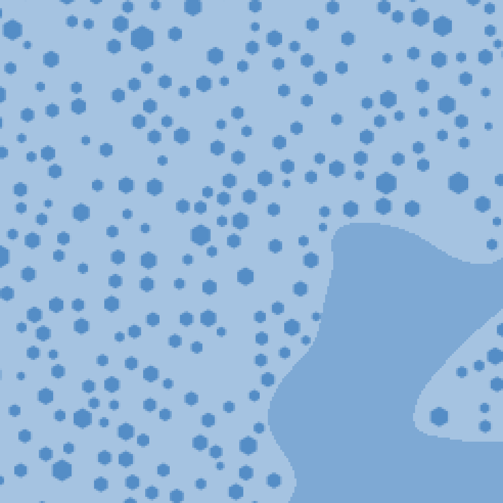
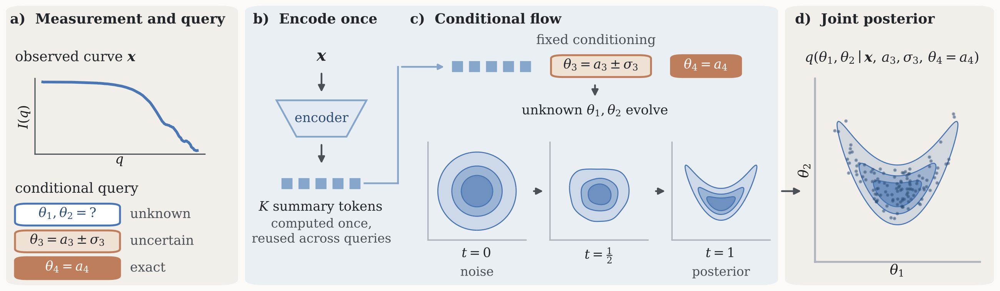

A simulated SAXS curve with known parameters, analysed with the trained network from the paper. The network gives the posterior: all combinations of the nine structural parameters that fit the curve. Tell it one parameter, exactly or roughly, and it updates the answer without retraining.
The simulated material and its curve. One random realization is kept fixed while the parameters change, so fibrils grow and thin out in place; the curve is averaged over six such realizations. Darker means denser. The fibril slider steps the simulator's packing parameter and shows the number of fibrils it actually places, per µm² of material. Scattering depends on the density differences, so the three densities change the curve but not the geometry.
Whole simulated box, 372 nm
This materialKept curve

LeftRight
Simulated cross-sections, 89 nm wide, darker where denser. Left, the material that produced the curve: dense fibrils, a matrix covering 41 % and a lighter interstitial phase. Right, another material from the posterior: the matrix covers 71 % and the fibrils are the lightest phase. Their curves are nearly the same.

The overview figure from the paper. (a) A curve is given together with a question. In the example, θ₁ and θ₂ are unknown, θ₃ is known with an uncertainty and θ₄ is known exactly. (b) The curve is compressed into a few summary tokens, which are computed once and reused for every question. (c) A flow transforms noise into samples of the unknown parameters, with the known information kept fixed as input. (d) The result is the joint posterior of the unknown parameters.
On this page the curve is the simulated SAXS curve above and the parameters are the nine structural parameters. Locking a parameter below makes it known, and the same trained network is asked again. Whether the curve is compatible with the locked value is assessed separately. The network itself is described on the page How the method works.
Posterior samples from one of the three trained networks, precomputed for a grid of known values. Window 0.01–0.30 Å−1. The curve fixes the fibril radius almost to a point, and the size spread, packing and separation nearly as closely; the densities and the matrix fraction it leaves open, and with them the number of fibrils per area. Lock the radius at another value and the check flags it: the curve does not allow that value. The number shown by the check is a percentile; below 0.01 it is flagged as a conflict.
Simulated measurementPredicted from posterior samples
Curve only After locking